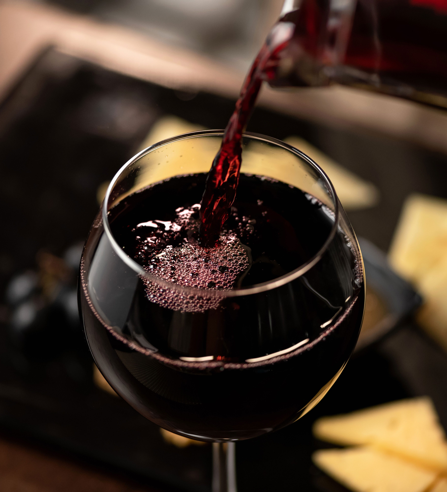

Merlot is one of the most widely planted grape varieties, with plantings outpacing even the more well-known Cabernet Sauvignon in many regions, including the grape's homeland of France. France is responsible for almost two-thirds of the world's total plantings of Merlot.
The variety is also popular in northern Italy and the warmer areas of southern Switzerland. Since the late 19th century, Italian vintners have been cultivating the Merlot grape. This grape refined in the hillside region near Trento City and the Vallagarina Valley.
In these areas, a cultivation system called Pergola Trentina and Guyot provides low yields, which results in concentrated grapes that translate into complex wines with rich flavours.
During the beginning of the 20th century, the popularity spread into the regions of Veneto, Friuli, Trentino, and Alto Adige, all on the North-eastern side of Italy.
By the nighties there were more than 93,000 acres of Merlot wine in production in Italy. It is a variety that produces high yields and so, usually makes it into some of the lesser-priced wines.
However, in the hands of the right vintner, Italian Merlot wines are splendid and just as complex as their more expensive and famous counterparts, such as Chianti, Brunello, or Barolo.
There is a small contingency of Italian winemakers who are using this grape and finally giving it the love and exposure it deserves.
The flavours of Merlot in a glass of wine are not easily defined. Plum and black cherry are among the most common fruit-based descriptions used, though Merlot is used for producing wines of a particular texture, rather than a particular taste.
You may hear the words smooth and easy drinking when coming across descriptions of Merlot wines. The main reason for this is that Merlot grapes are large to their pips and the thickness of the skins. For this reason, it can be used to soften wines made from more tannic varieties.
You may not think it to be the case, but Merlot ages just as well as Cabernet Sauvignon. Most wines should be drunk upon release. This is true of Merlot since it is a soft plummy wine with smooth tannins.
If you are wondering what tannins are, they are what preserves the wine for ageing and what gives your mouth that dry, astringent feeling. According to Fine Wine Concierge, Merlot should be given 3-5 years to age. However, some Merlots can age more than ten years if stored correctly.
One type of food does not go with them all, but Merlot can be very flexible as a wine pairing. Merlot can be drunk comfortably with a range of Italian dishes, especially tomato-based ones, and it goes with deep savoury tastes such as roast chicken, mushrooms, and parmesan.
Because many great Merlots are medium-bodied, they respond well with rich sauced dishes such as steak, in a red wine sauce or with casseroles. Merlot is also great for adding flavour and body to your red wine sauces.